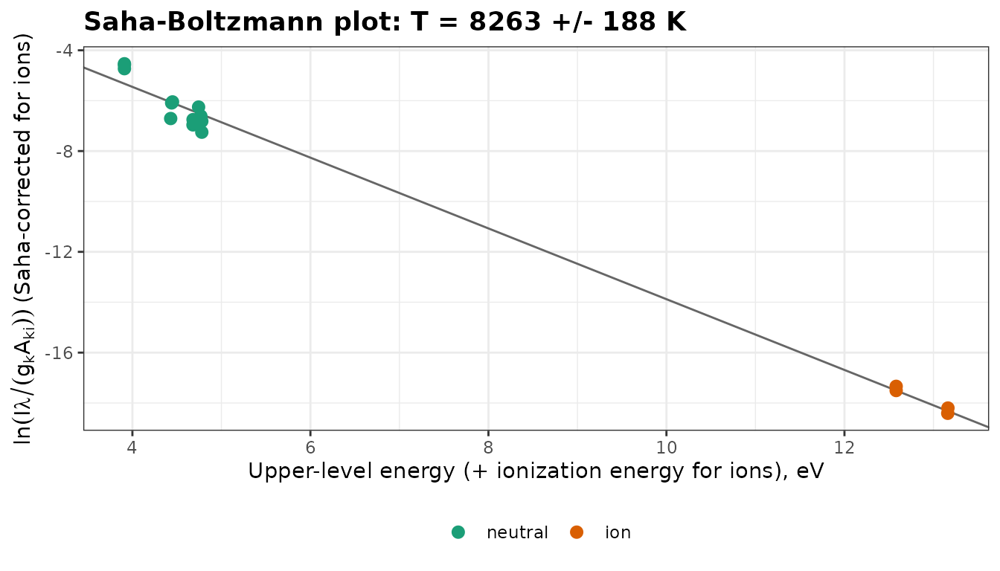
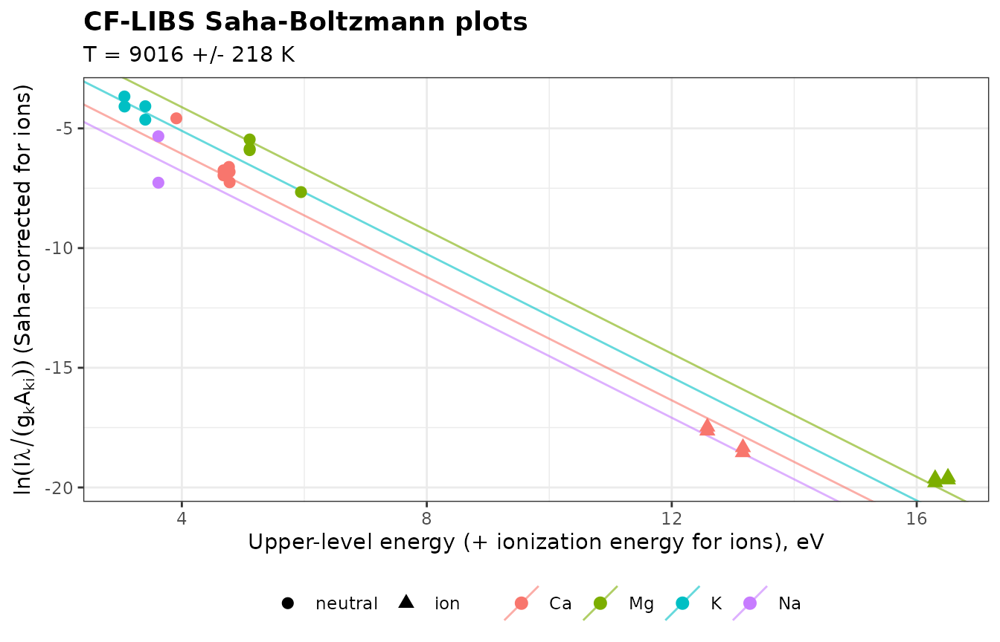

Quantitative LIBS assumes that the plasma is in local thermodynamic equilibrium (LTE), optically thin, and recorded within the linear range of the detector. This vignette checks these conditions on the forage spectra, measures the electron density N_e and the temperature T of the plasma, and ends with a calibration-free estimate of the composition of the samples. The intensities are not corrected for the spectral response of the instrument, and the acquisition delay is not known, so the values are indicative.
library(specProc)
library(dplyr)
library(tidyr)
library(tibble)
library(ggplot2)
data("forageLIBS")
spectra_id <- forageLIBS |> select(1:2) |> names()
minerals <- forageLIBS |> select(3:14) |> names()
spectra <- forageLIBS |> select(-all_of(c(spectra_id, minerals)))
wl <- as.numeric(names(spectra))
corrected <- baseline_arpls(spectra, lambda = 1e5, max.iter = 20)$correction
mean_spectrum <- colMeans(corrected)Detector saturation
A saturated line is clipped at the maximum count of the detector: its
area is wrong and no longer grows with concentration.
saturation_summary() lists the saturated channels. Each
spectrum is the mean of 8 shots, so we count the channels within 1% of
the 16-bit limit (65535), that is, saturated in nearly every shot:
saturated <- saturation_summary(spectra, limit = 65535, tolerance = 655)
# adjacent saturated channels belong to the same line
saturated$channels |>
mutate(line = cumsum(c(1, diff(index) > 2))) |>
group_by(line) |>
summarise(wavelength = round(mean(wavelength), 2), spectra = max(n_spectra)) |>
select(-line) |>
arrange(desc(spectra))
#> # A tibble: 11 × 2
#> wavelength spectra
#> <dbl> <dbl>
#> 1 397. 362
#> 2 393. 272
#> 3 399. 184
#> 4 280. 98
#> 5 388. 65
#> 6 280. 50
#> 7 423. 42
#> 8 589. 18
#> 9 770. 7
#> 10 590. 4
#> 11 391 1The resonance lines of Ca II (393.37 and 396.85 nm), Mg II (279.55 and 280.27 nm), Ca I (422.67 nm), Na I (589.00 and 589.59 nm) and K I (769.90 nm), as well as the head of the CN molecular band at 388.3 nm, are saturated in part of the spectra: they are left out of every diagnostic below.
Electron density
The hydrogen line H\alpha (656.28
nm) is the standard density diagnostic: its Stark width is large and
depends little on temperature (Gigosos et al., 2003). Its profile is
Lorentzian in these spectra (see vignette("peak-fitting")),
and electron_density() converts its full width at half
maximum into N_e:
halpha <- as_tibble(as.list(mean_spectrum[wl > 653.5 & wl < 659.5])) |>
peak_fit(profile = "lorentzian")
width <- halpha$tidied[[1]] |> filter(term == "wL")
width
#> # A tibble: 1 × 5
#> term estimate std.error statistic p.value
#> <chr> <dbl> <dbl> <dbl> <dbl>
#> 1 wL 1.69 0.0403 42.0 7.68e-50
ne <- electron_density(width$estimate, method = "halpha")
ne
#> wL
#> 1.887979e+17For other lines, stark_width() gives the width expected
at a density from the Stark parameters of the STARK-B database
(starkb_lines()), and self_absorption()
compares it with the measured width.
Temperature
Atomic data
A Boltzmann plot needs, for each line, the transition probability
A_{ki}, the statistical weight g_k and the energy E_k of the upper level.
nist_lines() retrieves them from the NIST Atomic Spectra
Database, and nist_ionization_energy() the ionization
energies:
ca_lines <- nist_lines(c("Ca I", "Ca II"), wavelength = c(310, 660))
nist_ionization_energy("Ca I")So that this vignette runs offline, the calcium lines used below are included (NIST ASD, Kramida et al.). The accuracy grades of the transition probabilities (C: ≤ 25%, D: ≤ 50%) limit the precision of the temperature:
atomic <- tribble(
~species, ~stage, ~wavelength, ~Aki, ~accuracy, ~Ek, ~gk,
"Ca I", 1, 428.301, 4.34e7, "C+", 4.779784, 5,
"Ca I", 1, 430.253, 1.36e8, "C+", 4.779784, 5,
"Ca I", 1, 431.865, 7.40e7, "C+", 4.7690284, 3,
"Ca I", 1, 443.496, 6.70e7, "C", 4.680635, 5,
"Ca I", 1, 445.478, 8.70e7, "C", 4.681327, 7,
"Ca I", 1, 558.876, 4.90e7, "D", 4.7435268, 7,
"Ca I", 1, 610.272, 9.60e6, "C", 3.910399, 3,
"Ca I", 1, 612.222, 2.87e7, "C", 3.910399, 3,
"Ca I", 1, 616.217, 4.77e7, "C", 3.910399, 3,
"Ca I", 1, 643.907, 5.30e7, "D", 4.450647, 9,
"Ca I", 1, 646.257, 4.70e7, "D", 4.4409544, 7,
"Ca I", 1, 649.378, 4.40e7, "D", 4.4300117, 5,
"Ca II", 2, 315.887, 3.10e8, "C", 7.047169, 4,
"Ca II", 2, 317.933, 3.60e8, "C", 7.049551, 6,
"Ca II", 2, 370.603, 8.80e7, "C", 6.467875, 2,
"Ca II", 2, 373.690, 1.70e8, "C", 6.467875, 2
)
ionization_energy <- 6.1131549 # Ca I, eVLine intensities
line_intensities() finds each line within 0.2 nm of its
tabulated wavelength (search), which absorbs the offset of
the wavelength axis, and integrates it over ±0.15 nm
(half_width). It keeps the columns of the table of lines,
so the result goes directly into a Boltzmann plot:
lines <- line_intensities(mean_spectrum, atomic)
lines |> select(species, wavelength, peak_wavelength, intensity, snr)
#> # A tibble: 16 × 5
#> species wavelength peak_wavelength intensity snr
#> <chr> <dbl> <dbl> <dbl> <dbl>
#> 1 Ca I 428. 428. 556. 194.
#> 2 Ca I 430. 430. 1121. 391.
#> 3 Ca I 432. 432. 692. 207.
#> 4 Ca I 443. 443. 716. 223.
#> 5 Ca I 445. 445. 1598. 467.
#> 6 Ca I 559. 559. 1182. 307.
#> 7 Ca I 610. 610. 417. 114.
#> 8 Ca I 612. 612. 1510. 393.
#> 9 Ca I 616. 616. 2381. 645.
#> 10 Ca I 644. 644. 1749. 490.
#> 11 Ca I 646. 646. 1155. 312.
#> 12 Ca I 649. 649. 413. 125.
#> 13 Ca II 316. 316. 764. 207.
#> 14 Ca II 318. 318. 1629. 439.
#> 15 Ca II 371. 371. 228. 61.4
#> 16 Ca II 374. 374. 516. 155.Boltzmann and Saha-Boltzmann plots
neutral <- boltzmann(filter(lines, stage == 1))
neutral
#> Boltzmann plot (12 lines)
#>
#> Temperature: 4512 +/- 501 K
#> R-squared: 0.8902The Ca I lines come from upper levels between 3.9 and 4.8 eV. Over such a narrow range, the slope is sensitive to the errors of a few intensities or transition probabilities. The Saha equation places the lines of the ion on the same plot, using the electron density, and extends the range of energies to about 13 eV:
saha <- saha_boltzmann(lines, ionization_energy = ionization_energy, electron_density = ne)
saha
#> Saha-Boltzmann plot (16 lines)
#>
#> Temperature: 8263 +/- 188 K
#> R-squared: 0.9928
#> Ne: 1.89e+17 cm-3
plot_boltzmann(saha)
The Saha-Boltzmann temperature, 8300 K, is far better determined than the Boltzmann temperature of the neutral lines alone (4500 ± 500 K). Its standard error, 190 K, reflects the scatter of the points, not the systematic errors of the atomic data or of the spectral response.
Is the plasma in LTE?
The McWhirter criterion gives the minimum electron density for collisions to dominate the population of the levels. The largest energy gap here is the first excited level of Ca II, 3.15 eV above the ground state:
lte <- mcwhirter_criterion(temperature = saha$temperature, delta_e = 3.15, electron_density = ne)
lte
#> # A tibble: 1 × 5
#> temperature delta_e minimum_density electron_density satisfied
#> <dbl> <dbl> <dbl> <dbl> <lgl>
#> 1 8263. 3.15 4.55e15 1.89e17 TRUEThe measured density is 42 times the minimum. The criterion is necessary but not sufficient: in a transient, inhomogeneous plasma, LTE also requires the equilibration to be faster than the changes of the plasma (Cristoforetti et al., 2010).
Self-absorption
Resonance lines end on the ground state, which is heavily populated,
so the plasma reabsorbs part of their light.
correct_self_absorption() compares each line with a
reference line of the same species that is little absorbed, by default
the one of smallest optical depth (Sun and Yu, 2009). The potassium
lines:
k_lines <- tribble(
~species, ~wavelength, ~Aki, ~Ei, ~Ek, ~gk,
"K I", 404.414, 1.150e+06, 0, 3.064907, 4,
"K I", 404.721, 1.070e+06, 0, 3.062581, 2,
"K I", 691.108, 2.500e+06, 1.609958, 3.403454, 2,
"K I", 693.877, 4.956e+06, 1.617113, 3.403454, 2,
"K I", 766.490, 3.779e+07, 0, 1.617113, 4,
"K I", 769.896, 3.734e+07, 0, 1.609958, 2
)
line_intensities(mean_spectrum, k_lines) |>
correct_self_absorption(temperature = saha$temperature) |>
select(wavelength, measured_intensity, SA, reference)
#> Warning: 1 line(s) have SA > 1: check the reference lines, the atomic data or
#> the intensities.
#> # A tibble: 6 × 4
#> wavelength measured_intensity SA reference
#> <dbl> <dbl> <dbl> <lgl>
#> 1 404. 191. 0.660 FALSE
#> 2 405. 135. 1 TRUE
#> 3 691. 123. 1.07 FALSE
#> 4 694. 138. 0.612 FALSE
#> 5 766. 5172. 0.135 FALSE
#> 6 770. 6899. 0.362 FALSEThe self-absorption coefficient SA is the fraction of
the intensity that escapes the plasma. The resonance doublet at 766.49
and 769.90 nm keeps only a small fraction: the 766.49 nm line has twice
the g_k A_{ki} of the 769.90 nm line,
so it should be twice as intense, yet it is weaker. These lines curve
the calibration of vignette("calibration") and are
unsuitable for the calibration-free analysis below. The coefficients of
the weaker lines, between about 0.6 and 1.07 (hence the warning), show
the precision of the method: it inherits the noise of the reference line
and the errors of the transition probabilities.
Calibration-free composition
Calibration-free LIBS (CF-LIBS; Ciucci et al., 1999) derives the
composition of a sample from its line intensities alone. In LTE, the
Boltzmann plots of all species share the same slope, -1/k_B T, and the intercept of each plot
gives the density of its species. cf_libs() fits the plots
together, adds the ionization stages that are not observed with the Saha
equation, and normalizes the densities of the elements to fractions that
sum to one.
The lines must be unsaturated and optically thin, which rules out the
resonance lines. cf_libs() also needs the partition
functions of the species, which it computes from the energy levels of
nist_levels(), and the ionization energies:
species <- c("Ca I", "Ca II", "Mg I", "Mg II", "K I", "K II", "Na I", "Na II")
levels <- nist_levels(species)
ionization <- nist_ionization_energy(c("Ca I", "Mg I", "K I", "Na I"))To run offline, the atomic data and the partition functions (from
partition_function(), tabulated from 6000 to 12000 K) are
included here:
cf_atomic <- tribble(
~species, ~wavelength, ~Aki, ~accuracy, ~Ek, ~gk,
"Ca I", 428.301, 4.340e+07, "C+", 4.779784, 5,
"Ca I", 430.253, 1.360e+08, "C+", 4.779784, 5,
"Ca I", 431.865, 7.400e+07, "C+", 4.769028, 3,
"Ca I", 443.496, 6.700e+07, "C", 4.680635, 5,
"Ca I", 445.478, 8.700e+07, "C", 4.681327, 7,
"Ca I", 616.217, 4.770e+07, "C", 3.910399, 3,
"Ca II", 315.887, 3.100e+08, "C", 7.047169, 4,
"Ca II", 317.933, 3.600e+08, "C", 7.049551, 6,
"Ca II", 370.603, 8.800e+07, "C", 6.467875, 2,
"Ca II", 373.690, 1.700e+08, "C", 6.467875, 2,
"Mg I", 383.829, 1.610e+08, "B+", 5.945916, 7,
"Mg I", 516.732, 1.130e+07, "B+", 5.107827, 3,
"Mg I", 517.268, 3.370e+07, "B+", 5.107827, 3,
"Mg I", 518.360, 5.610e+07, "A", 5.107827, 3,
"Mg II", 279.078, 4.010e+08, "A", 8.863762, 4,
"Mg II", 279.800, 4.790e+08, "A", 8.863654, 6,
"Mg II", 292.863, 1.150e+08, "A", 8.654711, 2,
"Mg II", 293.651, 2.300e+08, "A", 8.654711, 2,
"K I", 404.414, 1.150e+06, "A", 3.064907, 4,
"K I", 404.721, 1.070e+06, "B+", 3.062581, 2,
"K I", 691.108, 2.500e+06, "AA", 3.403454, 2,
"K I", 693.877, 4.956e+06, "AA", 3.403454, 2,
"Na I", 818.326, 4.290e+07, "A+", 3.616977, 4,
"Na I", 819.482, 5.140e+07, "A+", 3.616971, 6
)
cf_ionization <- c(Ca = 6.113155, Mg = 7.646236, K = 4.340664, Na = 5.139077)
partition_table <- tribble(
~species, ~`6000`, ~`7000`, ~`8000`, ~`9000`, ~`10000`, ~`11000`, ~`12000`,
"Ca I", 1.407, 1.798, 2.401, 3.281, 4.499, 6.184, 8.356,
"Ca II", 2.389, 2.633, 2.917, 3.229, 3.560, 3.905, 4.262,
"Mg I", 1.049, 1.109, 1.207, 1.362, 1.597, 1.959, 2.463,
"Mg II", 2.001, 2.004, 2.010, 2.020, 2.036, 2.058, 2.087,
"K I", 2.488, 3.000, 3.858, 5.078, 6.743, 8.938, 11.503,
"K II", 1, 1, 1, 1, 1, 1, 1,
"Na I", 2.166, 2.401, 2.868, 3.635, 4.779, 6.548, 8.724,
"Na II", 1, 1, 1, 1, 1, 1, 1
)
# log-linear interpolation of the table, in the form cf_libs() accepts
partition <- function(species, temperature) {
grid <- as.numeric(names(partition_table)[-1])
vapply(species, function(s) {
u <- unlist(partition_table[partition_table$species == s, -1])
exp(stats::approx(grid, log(u), xout = temperature)$y)
}, numeric(1))
}With partition = NULL (the default),
cf_libs() downloads the levels and computes the partition
functions itself. On the mean spectrum:
cf_mean <- line_intensities(mean_spectrum, cf_atomic) |>
cf_libs(electron_density = ne, partition = partition, ionization_energy = cf_ionization)
cf_mean
#> Calibration-free LIBS (24 lines, 6 species; Saha-Boltzmann plots)
#>
#> Temperature: 9016 +/- 218 K
#> Ne: 1.89e+17 cm-3
#> Normalization: closure
#>
#> element atomic_fraction mass_fraction stages
#> Ca 0.1012 0.1095 I, II
#> Mg 0.0871 0.0571 I, II
#> K 0.7587 0.8005 I, II (Saha)
#> Na 0.0531 0.0329 I, II (Saha)
plot_boltzmann(cf_mean)
The four Saha-Boltzmann plots are parallel within the scatter of their points. The forage is mostly C, H, O and N, whose lines are not used here, so the fractions describe the relative composition of Ca, Mg, K and Na, which we compare with the laboratory values on the same basis:
laboratory <- forageLIBS |>
summarise(across(c(Ca, Mg, K, Na), \(v) mean(v, na.rm = TRUE))) |>
unlist()
cf_mean$composition |>
select(element, cf_libs = mass_fraction) |>
mutate(laboratory = laboratory[element] / sum(laboratory),
ratio = cf_libs / laboratory)
#> # A tibble: 4 × 4
#> element cf_libs laboratory ratio
#> <chr> <dbl> <dbl> <dbl>
#> 1 Ca 0.109 0.222 0.494
#> 2 Mg 0.0571 0.0702 0.813
#> 3 K 0.801 0.698 1.15
#> 4 Na 0.0329 0.0101 3.25Without any calibration, the composition is of the right order: the ratios to the laboratory values are 0.5 for Ca, 0.8 for Mg, 1.1 for K and 3.3 for Na. The main sources of bias are the spectral response of the instrument, which weights the lines of each element differently, the uncertain transition probabilities of the Ca lines, and the weak Na lines. With one standard of known composition, the remaining bias can be measured and removed for each element.
Summary
- Screen for saturation first: saturated lines are useless for diagnostics and nonlinear for calibration.
- Measure N_e on H\alpha, a broad and optically thin line.
- Prefer Saha-Boltzmann to Boltzmann plots: two ionization stages span a much wider range of energies.
- Check LTE and self-absorption before trusting intensities: the McWhirter criterion is a minimum requirement, and resonance lines are often strongly self-absorbed.
- Calibration-free LIBS is semi-quantitative without a correction of the spectral response.
References
- Ciucci, A., Corsi, M., Palleschi, V., Rastelli, S., Salvetti, A., Tognoni, E. (1999). New procedure for quantitative elemental analysis by laser-induced plasma spectroscopy. Applied Spectroscopy, 53(8):960–964.
- Cristoforetti, G., De Giacomo, A., Dell’Aglio, M., Legnaioli, S., Tognoni, E., Palleschi, V., Omenetto, N. (2010). Local thermodynamic equilibrium in laser-induced breakdown spectroscopy: beyond the McWhirter criterion. Spectrochimica Acta Part B, 65(1):86–95.
- Gigosos, M.A., González, M.Á., Cardeñoso, V. (2003). Computer simulated Balmer-alpha, -beta and -gamma Stark line profiles for non-equilibrium plasmas diagnostics. Spectrochimica Acta Part B, 58(8):1489–1504.
- Kramida, A., Ralchenko, Yu., Reader, J., and NIST ASD Team. NIST Atomic Spectra Database, https://physics.nist.gov/asd.
- Sun, L., Yu, H. (2009). Correction of self-absorption effect in calibration-free laser-induced breakdown spectroscopy by an internal reference method. Talanta, 79(2):388–395.